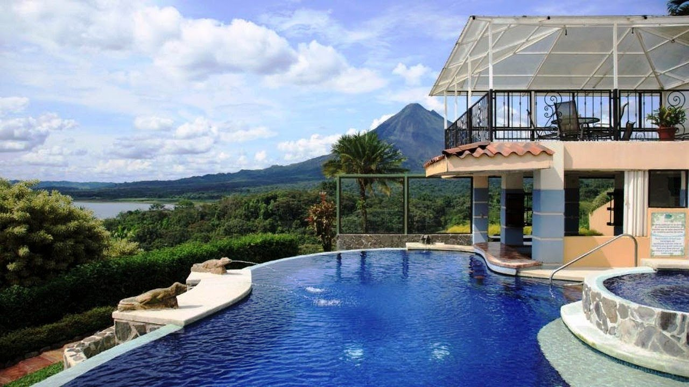
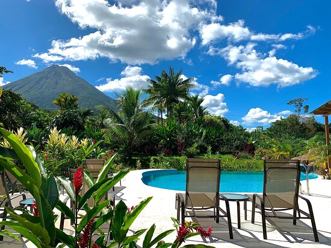
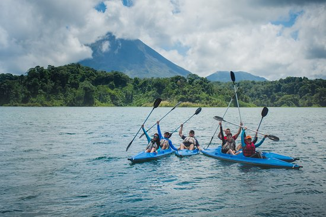
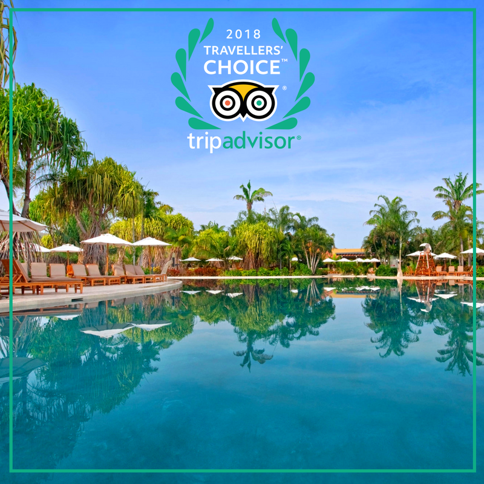

Paradise Country
Resort Hotel & Adventure
Nuestra historia comienza con un amante de la naturaleza que se convirtió en leyenda en Arenal. El costarricense Josué Zúñiga era un arquitecto certificado que tenía un don para el pensamiento creativo.
A fines de la década de 1980, Josué se enamoró de una tierra muy especial en la base del majestuoso Volcán Arenal, donde varios arroyos de agua termal atravesaban un pantano. Convenció a los propietarios locales para que le vendieran una parte de la tierra y pasó los siguientes meses persuadiendo a sus amigos para que invirtieran con él en un concepto de spa de bienestar centrado en la idea de un encuentro natural.
En enero de 1991, el complejo de piscinas y restaurante original de Tabacón cerraron sus puertas para una remodelación completa que duró más de dos años. El proyecto del Sr. Zúñiga tenía como objetivo reforestar las áreas existentes que rodeaban las piscinas y el restaurante. Al río se le dio forma para transformar las marismas y hacer que se parecieran a lo que podría haber sido antes de que las vacas pastaran en estas tierras. Más de 200 especies de plantas comenzaron a prosperar formando un hermoso jardín botánico. Las prístinas aguas termales ahora fluían en forma de cascadas, formando lugares escondidos para bañarse.
Se ampliaron el restaurante y la cocina, se agregaron vestidores, se construyó un pequeño spa y, en abril de 1993, Paradise Country reabrió como destino de día. En ese entonces, La Fortuna era una tranquila ciudad agrícola con tres lugares de hospedaje muy pequeños y dos restaurantes.
A finales de 1997, se inauguró Paradise Country, con 42 cómodas habitaciones. Esto marcó el inicio oficial de Arenal como destino turístico internacional. Hoy en día, el resort abarca 900 acres de exuberante reserva tropical, es hogar de la red más grande de aguas termales que fluyen naturalmente en Costa Rica y ofrece una experiencia de hospitalidad de clase mundial.
Misión
Somos un hotel de montaña, al alcance de nacionales y extranjeros, donde nuestra mayor satisfacción es ofrecer un excelente servicio de calidad y una atención personalizada, para que nuestros huéspedes tengan experiencias inolvidables y obtengan recuerdos memorables, en el cual también puedan compartir y proteger el medio ambiente para las futuras generaciones.
Visión
Ser un lugar de descanso, al alcance de todos, que ofrezca un excelente servicio de calidad y compromiso con el medio ambiente promoviendo un turismo consciente de la importancia de la conservación y preservación de la naturaleza.
Premios y Reconocimientos
A lo largo de los años, Paradise Country ha sido reconocido por algunos de los grupos más reconocidos de la industria y respetadas publicaciones centradas en la hospitalidad de lujo y los viajes experimentales. El resort recibe constantemente elogios basados en el reconocimiento de los huéspedes. Este es un reflejo directo de nuestro compromiso por brindar un servicio de clase mundial.
